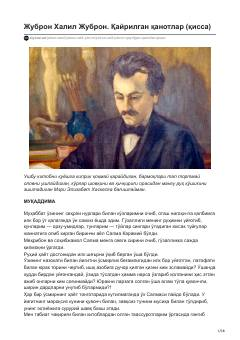

QQYoshlikdagi ilk muhabbat va ayriliq azobi haqidagi ta'sirli qissa.
Ushbu asar muallifning yoshlikdagi ilk muhabbati, Salma Karamiy bilan bo'lgan pokiza tuyg'ulari va hayotiy iztiroblari haqida hikoya qiladi. Qissa inson ruhiyatining nozik qirralarini, sevgi va ayriliq azobini falsafiy mushohadalar orqali ochib beradi.